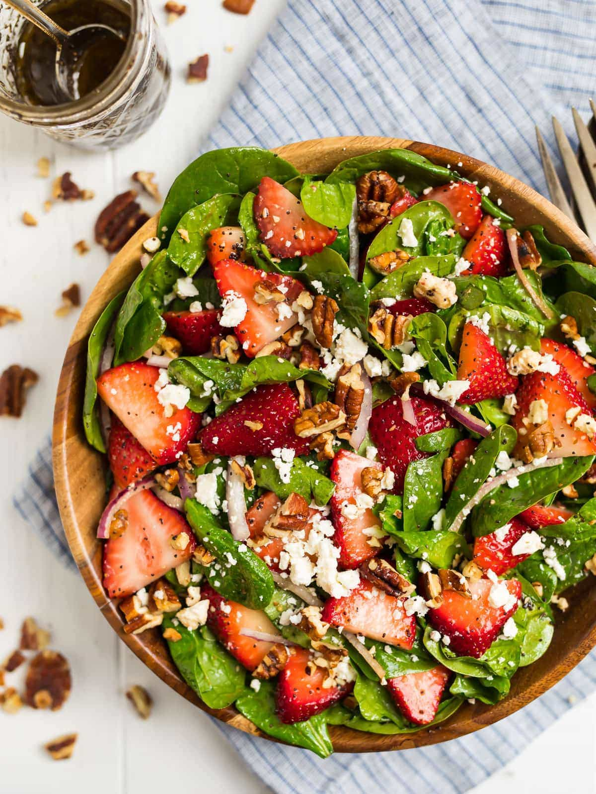

Spinach and Strawberry Salad

We love this spinach strawberry salad all year round if we can find strawberries! Even the grandchildren love this quick and easy salad.
Ingredients
- 2 bunches spinach, rinsed and torn into bite-size pieces
- 4 cups sliced strawberries
- 1/2 cup vegetable oil
- 1/2 cup white sugar
- 1/4 cup white wine vinegar
- 2 tablespoon sesame seeds
- 1/4 teaspoon paprika
How to prepare
- Toss spinach and strawberries together in a large bowl.
- Whisk oil, sugar, vinegar, sesame seeds, poppy seeds, and paprika together in a medium bowl; pour over spinach and strawberries, and toss to coat.